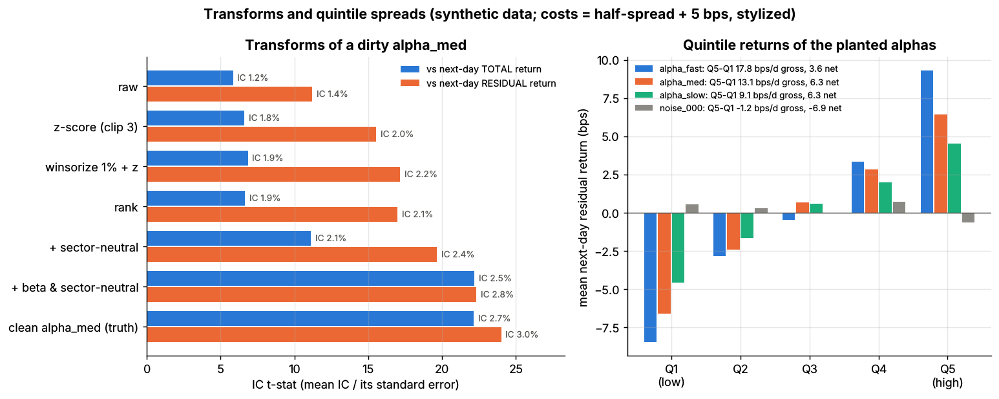
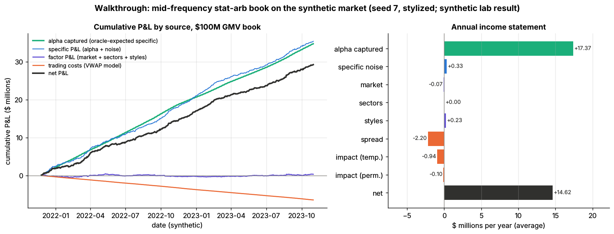

Walkthrough: a mid-frequency stat-arb book¶
TL;DR
- One rebalance of a toy $100M market-neutral US equity book, end to end: liquidity screen → three alphas → winsorize, z-score, neutralize → IC-weighted composite → PCA risk model → cost-aware optimizer → 289 orders → one-day VWAP → next-day attribution.
- Every number comes from one script that imports the finished labs' core functions (Labs 11, 12, 14 and 17) and runs them on the synthetic market, seed 7.
- The traded day lost $48K: $68K of expected alpha was swamped by $55K of stock-specific noise, $49K of factor losses and $13K of costs. Single days are mostly noise.
- Over two simulated years the book earned $17.9M gross and $14.6M net a year (Sharpe 12.5 and 10.3, a stylized synthetic lab result; real books of this design net roughly 1–2).
- The lessons survive the stylization: neutralize on the beta you actually trade, judge a risk model on the optimized book, and let costs decide how far to trade.
Level: Core · Read time: ~14 min · Last verified: 2026-11
Cast and setup¶
The book is a statistical arbitrage portfolio of the kind described in cross-sectional alpha and neutralization: many small long and short bets on residual returns, held for days, beta-neutral and sector-neutral. Signals are computed after the close of day t; orders execute during day t+1.
The market is the labs' simulator: 500 stocks, 11 sectors, four style factors, fat tails, volatility regimes and three planted alphas of known strength. The helper script labs/walkthroughs/mid-frequency-stat-arb.py runs the whole pipeline in about 45 seconds and writes every figure quoted here to mid-frequency-stat-arb.json.
| Assumption (illustrative) | Value |
|---|---|
| Size | $50M capital, 100% long and 100% short: $100M gross market value (GMV) |
| Universe | price ≥ $5 and 20-day average daily volume (ADV) ≥ $25M, re-screened daily |
| Position cap | the lesser of $500K and 1% of ADV |
| Forecast and risk horizon | 5 days; rebalance daily |
| Backtest | 504 daily rebalances, Nov 2021 – Oct 2023 (simulated calendar); earlier years are history |
| Shown in detail | signal date 2023-08-09, trade date 2023-08-10 |
flowchart LR
u["Universe<br/>500 to 402 names"] --> a["Three raw alphas<br/>fast, medium, slow"]
a --> tr["Transforms<br/>winsorize, z-score, neutralize"]
tr --> c["IC-weighted composite<br/>trailing 5-day IC 0.079"]
c --> al["Alpha in return units<br/>IC x vol x score"]
rm["PCA risk model<br/>16 factors"] --> opt
cm["Cost model<br/>spread plus VWAP impact"] --> opt
al --> opt["Optimizer<br/>dollar, beta, sector neutral"]
opt --> tl["Trade list<br/>289 orders, 37.5M USD"]
tl --> ex["VWAP over day t+1<br/>10 percent in the close"]
ex --> pnl["Attribution<br/>factor, specific, costs"]
pnl -.->|"IC and cost feedback"| cStage 1: the universe¶
A liquidity screen decides what the book may hold. It uses only data known at the close (point-in-time data; see D1): today's trailing ADV, not next month's. On the signal date 402 of 500 names pass; the thinnest survivor trades $25.1M a day. Over the backtest the universe averages 415 names. A held name that drops out gets a zero cap, so the optimizer sells it.
Stage 2: three alphas¶
Each alpha stands in for a family from feature engineering: A1 fast (reversal-like, half-life 2 days), A2 medium (revisions-like, 10 days) and A3 slow (quality-like, 60 days). Their planted daily information coefficients (IC: the cross-sectional correlation of signal with next-day residual return) are 0.04, 0.03 and 0.02.
Research signals never arrive clean, so the script passes each through Lab 11's make_raw_signal. That rescales it into arbitrary units and adds a beta tilt (making each signal partly a disguised market bet), a slowly drifting sector tilt and rare huge outliers.
Stage 3: transforms¶
Per date, on universe names only, the script applies Lab 11's core functions (signal transforms):
x = winsorize(raw_t, 0.01) # clip at the 1st and 99th percentile first
x = zscore(x) # mean 0, sd 1, clipped at +-3
E = np.column_stack([beta_hat_t, sector_dummies]) # ESTIMATED 252-day beta + 11 sector columns
signal_t = zscore(neutralize(x, E)) # residual of a per-date regression, re-scaled
Winsorization before the z-score stops one bad print from setting everyone's scale. Neutralization strips the beta and sector bets. Scored the way evaluating signals recommends (mean daily IC against next-day total return, all 1,260 days):
| Alpha | Raw | Winsorized + z-score | Neutralized | Neutralized vs residual return | Correlation with true beta, before → after neutralizing |
|---|---|---|---|---|---|
| A1 fast | 0.0172 | 0.0264 | 0.0315 | 0.0369 | 0.46 → 0.13 |
| A2 medium | 0.0150 | 0.0208 | 0.0230 | 0.0263 | 0.43 → 0.13 |
| A3 slow | 0.0082 | 0.0135 | 0.0162 | 0.0191 | 0.43 → 0.12 |
Lab 11 ran the same recipe on the same planted alpha (a different random draw) but neutralized on the true beta: IC 0.0123 → 0.0250, IC t-stat 5.8 → 22.2 (synthetic lab result). Here beta is estimated, so A2 reaches only 0.0230 and a 0.13 correlation with true beta survives. You can only neutralize what you can measure. That residue reappears in Stage 9.

Lab 11: each transform step's IC t-stat against total and residual returns (left); quintile returns of the planted alphas (right). Synthetic data.
Stage 4: IC-weighted combination¶
Alpha combination (F5) uses Lab 12's combine_ic_weighted: weights proportional to each signal's positive IC. The IC is measured against 5-day residual returns over a trailing 252-day window, using only dates whose 5-day labels are complete, so there is no look-ahead.
ic_trail = ic5.rolling(252).mean().shift(5) # labels complete by date t
comp, w = combine_ic_weighted(X_t, ic_trail.loc[t]) # Lab 12: w_k ∝ max(IC_k, 0)
alpha = ic_comp * np.sqrt(5) * sigma_spec * zscore(comp) # Grinold: IC x volatility x score
On the signal date the trailing 5-day ICs are 0.047, 0.057 and 0.040, giving weights of 0.33 (A1), 0.40 (A2) and 0.28 (A3). The composite's own trailing 5-day IC is 0.079. The last line converts a score into an expected 5-day return (Grinold 1994). With a median specific volatility of 1.22% a day, one standard deviation of score is worth 0.079 × √5 × 1.22% ≈ 22 bps; the 5th to 95th percentile of alphas runs from −37 to +41 bps.
IC weighting is near-optimal here because the three alphas are uncorrelated by construction. In Lab 12, with a near-duplicate and ten noise signals in the mix, walk-forward rank ICs were 0.082 (IC-weighted), 0.085 (ridge) and 0.087 (oracle weights), and IC weighting put 0.43 of its weight on one alpha and its echo (synthetic lab result). With overlapping alphas, use ridge.
Stage 5: risk model¶
The risk model (P1) is Lab 14's pca_factor_cov: the top 16 principal components of a 252-day return window plus a diagonal of specific variances, refreshed every 21 days: a statistical factor model in the tradition of Connor and Korajczyk (1986). With 500 stocks and 252 days the sample covariance is singular; keeping 16 factors and discarding the remaining off-diagonal noise is the shrinkage (P2). On the signal date the first factor (roughly "the market") explains 24% of total stock variance, and all 16 explain 46%.
Lab 14 shows why the estimator matters. All four estimators forecast random portfolios' risk well, with bias statistics (realized ÷ predicted volatility) of 0.99–1.05. For optimized portfolios: sample covariance 2.78, Ledoit-Wolf 1.92, PCA 1.00, true covariance 0.92 (synthetic lab result). The optimizer seeks out the estimate's blind spots (Michaud 1989).

Lab 14: predicted vs realized volatility for random (grey) and optimized (colored) portfolios under four estimators. Synthetic data.
Stage 6: the optimizer¶
Mean-variance optimization (P3) uses Lab 14's optimize_portfolio unchanged. The cost vector comes from the cost model: half-spread plus the Lab 17 VWAP impact of a typical $100K trade, per dollar traded.
w = optimize_portfolio(alpha, cov_5d, w_prev, risk_aversion=150,
cost=1.0 * cost_per_dollar, # charged against 5-day alpha
beta=beta_hat, sectors=sector_dummies, # dollar-, beta-, sector-neutral
max_weight=np.minimum(0.01, 0.01 * adv / capital),
max_gross=2.0) # 100/100 of capital = 100M USD GMV
The target book on 2023-08-09:
- $50.0M long in 194 names, $50.0M short in 189; 93 names sit at their cap.
- Net dollars, estimated-beta exposure and every sector's net exposure are zero to the cent.
- Predicted volatility is $76.8K a day (1.22% of GMV a year); 97.5% of predicted variance is stock-specific.
- The optimizer expects $247K of alpha over five days and $11.3K of trading cost.
Risk aversion 150 was set so that the $100M gross cap almost binds; the cost multiplier of 1.0 was not tuned. Lab 14's cost test shows what the penalty buys: with none, a biweekly book traded 19.4 times its capital a year and paid 316 bps; a multiplier of 0.25 kept 549 bps of net expected alpha against 493 (synthetic lab result). A sharper alternative is to trade partway toward a forward-looking aim (Gârleanu and Pedersen 2013; P6).
Stage 7: the trade list¶
Target minus yesterday's book is $37.5M of orders in 289 names: turnover of 37.5% of GMV in one day. The median order is $103K, or 0.15% of ADV; the largest is 1.66% of ADV. The five largest each way:
| Side | Ticker | Sector | Score z | 5-day alpha (bps) | Old → new position | Trade | % ADV | VWAP cost (bps) |
|---|---|---|---|---|---|---|---|---|
| Buy | S0323 | Materials | +1.74 | +43.1 | −$196K → +$359K | +$556K | 1.55 | 6.3 |
| Buy | S0001 | Utilities | +1.16 | +18.0 | +$6K → +$500K | +$494K | 0.30 | 2.3 |
| Buy | S0385 | Energy | +0.83 | +15.5 | −$99K → +$341K | +$440K | 1.28 | 7.3 |
| Buy | S0104 | HealthCare | −0.39 | −7.8 | −$454K → −$63K | +$391K | 0.53 | 3.3 |
| Buy | S0198 | Industrials | +1.08 | +25.4 | −$121K → +$265K | +$386K | 0.82 | 3.9 |
| Sell | S0365 | HealthCare | −0.85 | −15.6 | +$327K → −$500K | −$827K | 0.85 | 3.4 |
| Sell | S0051 | InfoTech | −1.51 | −28.4 | +$338K → −$354K | −$692K | 1.66 | 4.7 |
| Sell | S0442 | ConsumerStaples | −0.90 | −15.2 | +$422K → −$191K | −$613K | 0.50 | 3.0 |
| Sell | S0287 | Materials | −1.57 | −38.3 | +$277K → −$251K | −$529K | 0.61 | 3.4 |
| Sell | S0230 | RealEstate | −0.73 | −13.6 | −$11K → −$494K | −$483K | 0.39 | 2.0 |
S0104 is a buy of a stock with a negative forecast: its alpha shrank to −7.8 bps, no longer worth a $454K short, so the optimizer covers most of it. A trade list moves the book toward a new optimum; it is not a list of the day's best ideas. Where a trade opens a position, its 5-day alpha dwarfs its cost (S0323: +43 bps against 6.3).
Stage 8: execution¶
Every order goes to a one-day VWAP (E2). Lab 17's vwap_schedule slices it along the minute volume curve, with 10% in the closing auction. Its child_order_costs_bps charges half-spread, temporary market impact (η = 0.15, power 0.6) and permanent impact (γ = 0.30), a form after Almgren et al. (2005), as stylized in Lab 17.
sequenceDiagram
participant D as Data and signals
participant O as Optimizer
participant X as VWAP algo
participant M as Market
participant R as Risk and P and L
Note over D: Wed 2023-08-09 after the close
D->>O: 402-name universe, composite, alphas
O->>X: target book, 289 orders, 37.5M USD
Note over X,M: Thu 2023-08-10, 9.30 am to 4 pm
X->>M: child orders along the volume curve
X->>M: 10 percent of each order in the closing auction
M-->>R: fills and closing prices
R->>R: attribute P and L, compare costs with the model
R-->>D: IC and cost feedback for tonightThe largest order sells 53,960 shares of S0365 ($827K, 0.845% of ADV, daily volatility 1.79%). Lab 17's perfect-curve VWAP paid 7.79 bps of temporary and 2.96 bps of permanent impact on a 10%-of-ADV order in a 2%-volatility stock (synthetic lab result). Scaled with the model's exponents:
- temporary: 7.79 × (0.845/10)^0.6 × (1.79/2.00) = 1.58 bps (script: 1.53)
- permanent: 2.96 × (0.845/10) × (1.79/2.00) = 0.22 bps (script: 0.22)
- spread: a 1.83 bps half-spread on the 90% traded before the auction = 1.65 bps
Total 3.4 bps, about $280. For the whole list the VWAP model expects $12.75K, 13% above the optimizer's linearized $11.3K: concave impact makes the bigger trades cost more than the $100K approximation assumes.
VWAP or implementation shortfall (Perold 1988)? At 0.15% of ADV, impact is small; the real cost of patience is alpha decay. The script brackets it. Put on at the close of t (the labs' usual convention), the new book would earn $19.7M a year gross. A VWAP over t+1, modeled as holding the average of old and new weights, earns $17.9M; a full day's delay, $16.0M. Each day of delay costs about $1.9M a year, most of it from A1, whose predictive power halves every two days against every ten for A2 [Estimate]. That argues for a front-loaded IS schedule on the fast sleeve.

Lab 17: TWAP, VWAP, POV and close-heavy schedules on one simulated day, and participation by half hour. Synthetic data.
Stage 9: next-day P&L attribution¶
P&L attribution (L1) splits the day with the simulator's true factor exposures, as a fundamental attribution model would. Because the simulator knows each stock's true expected return, specific P&L also splits into alpha and luck:
hold = 0.5 * (w_prev + w) # VWAP fills land mid-day on average
factor_pnl = capital * (hold @ B) * f_next # market, 4 styles, 11 sectors
specific_pnl = capital * hold @ s_next # = alpha captured + noise
alpha_captured = capital * hold @ E_t[s_next] # oracle; unknowable in real life
flowchart LR
a1["Alpha captured<br/>+67.9K"] --> s1["Specific<br/>+13.1K"]
a2["Specific noise<br/>-54.8K"] --> s1
f1["Market<br/>-26.5K"] --> f0["Factor<br/>-48.8K"]
f2["Styles<br/>-22.3K"] --> f0
f3["Sectors<br/>0.0K"] --> f0
s1 --> g["Gross<br/>-35.7K"]
f0 --> g
c1["Spread -9.1K<br/>impact -3.6K"] --> c0["Costs<br/>-12.7K"]
g --> n["Net<br/>-48.4K USD"]
c0 --> nThursday lost $48.4K. The gross loss of $35.7K is a half-sigma move against the predicted $76.8K: the alpha arrived on schedule and noise did the damage. Two factor lines deserve a look. Sector P&L is exactly zero because the sector constraint used the true sector dummies. The market line is not: the book was neutral on estimated beta but carried $3.6M of true beta. Attributing with a different model from the one the optimizer used is what exposes such leaks. Over two years that exposure averaged 3.3% of GMV in absolute terms, and daily P&L correlated 0.45 with the index. On this day the true covariance put risk at $94.1K, 23% above the PCA forecast.
Stage 10: two years of the same loop¶

The script's 504 daily rebalances: cumulative P&L by source (left) and the average annual income statement (right). Synthetic lab result.
| Metric (synthetic lab result) | Value |
|---|---|
| Names held | 197 long, 197 short of 415; 88 at cap |
| Traded per day | 36.6% of GMV (92 times a year) |
| Cost per dollar traded | 3.52 bps realized vs 3.03 bps in the optimizer |
| Volatility, % of GMV a year | 1.43 realized vs 1.28 predicted (bias statistic 1.11) |
| Sharpe ratio, gross / net | 12.5 / 10.3 |
| Max drawdown; days positive | $372K (0.37% of GMV); 74% |
| Composite IC, 1-day / 5-day | 0.046 / 0.074 |
These Sharpe ratios are not a forecast; the Fundamental Law explains them. An IC of 0.046 across 415 names a day (breadth 415 × 252 bets a year) gives 0.046 × √(415 × 252) ≈ 15, and constraints, estimation error and the VWAP lag keep about 84% of that, the transfer coefficient of Clarke, de Silva and Thorley (2002) [Estimate]. The planted alphas never decay, crowd or break, and nothing is charged for commissions, borrow or bad data. For realistic levels: diversified multi-alpha books are put at gross 1.5–3 and net 1–2 [Lore], and Avellaneda and Lee's PCA-residual strategy earned 1.44 net of 10 bps round-trip costs over 1997–2007, falling to 0.9 in 2003–2007 [Verified] (stat-arb overview).
P&L / cost attribution¶
Average year, $ thousands (synthetic lab result). Subtotals reconcile exactly to the script's totals.
| Line | $K per year |
|---|---|
| Alpha captured (oracle-expected specific return) | 17,371.7 |
| Specific noise | +329.8 |
| Specific P&L | 17,701.5 |
| Market | −74.5 |
| Sectors | 0.0 |
| Styles | +226.2 |
| Factor P&L | +151.7 |
| Gross trading P&L (17.9% of GMV) | 17,853.2 |
| Half-spread | −2,197.2 |
| Temporary impact | −935.4 |
| Permanent impact | −102.0 |
| Modeled trading costs | −3,234.6 |
| Net P&L (14.6% of GMV) | 14,618.6 |
| Memo, not in the toy: commissions at an illustrative 0.5¢ per share on 310M shares | −1,552.1 |
Memo, not in the toy: borrow on $50M of shorts at 0.25–0.5% a year [Lore] |
−125 to −250 |
Costs take 18% of gross before commissions, and the half-spread is two-thirds of them because the orders are small.
What would be different in real life¶
- Alphas. Real books combine hundreds of weaker, correlated signals whose ICs decay after publication and crowd: the August 2007 unwind hit everyone holding the same names (Khandani and Lo 2011; stat-arb overview, factor-residual mean reversion).
- Data. 1,000–3,000 names with corporate actions, delistings and restatements. Point-in-time hygiene (D1) is where backtests quietly cheat.
- Risk model. Commercial fundamental models carry about 60 industries and 12 styles
[Verified](D3), updated daily. The script chose 16 PCA factors because it knew the true count. - Beta. Neutralize and constrain on the same beta, ideally the risk model's, and hedge what is left with index futures.
- Costs. Add commissions, fees, borrow and financing (shorting and financing). Calibrate impact on your own fills: AQR's live trades cost far less than academic estimates (Frazzini, Israel and Moskowitz 2018)
[Verified](P5). - Execution. One VWAP order is mostly noise: in Lab 17 a 10%-of-ADV order's shortfall averaged 13.3 bps with a standard deviation of 122 bps (synthetic lab result). Judge algorithms in aggregate (TCA).
- Capacity. At ten times the size, the same model raises temporary impact per dollar about four-fold (10^0.6) and permanent impact ten-fold
[Estimate].
Related pages¶
- Cards used: D1 point-in-time data · D2 feature engineering · D3 signal transforms · D4 evaluating signals · F5 alpha combination · P1 risk models · P2 covariance shrinkage · P3 mean-variance optimization · P5 cost and impact models · P6 trading toward the aim · E2 VWAP, TWAP and POV · E3 implementation shortfall · L1 live monitoring and attribution
- Strategies: cross-sectional alpha and neutralization · stat arb: overview and history · factor-residual mean reversion
- Context: there is no single algorithm · walkthrough: executing a $500M buy order
Sources¶
- [Verified] Grinold, R. C. (1989). "The Fundamental Law of Active Management." Journal of Portfolio Management 15(3), 30–37. https://doi.org/10.3905/jpm.1989.409211 (accessed 2026-11)
- [Verified] Grinold, R. C. (1994). "Alpha Is Volatility Times IC Times Score." Journal of Portfolio Management 20(4), 9–16. https://doi.org/10.3905/jpm.1994.409482 (accessed 2026-11)
- [Verified] Clarke, R., de Silva, H. & Thorley, S. (2002). "Portfolio Constraints and the Fundamental Law of Active Management." Financial Analysts Journal 58(5), 48–66. https://doi.org/10.2469/faj.v58.n5.2468 (accessed 2026-11)
- [Verified] Connor, G. & Korajczyk, R. A. (1986). "Performance measurement with the arbitrage pricing theory: A new framework for analysis." Journal of Financial Economics 15(3), 373–394. https://doi.org/10.1016/0304-405X(86)90027-9 (accessed 2026-11)
- [Verified] Ledoit, O. & Wolf, M. (2004). "A well-conditioned estimator for large-dimensional covariance matrices." Journal of Multivariate Analysis 88(2), 365–411. https://doi.org/10.1016/S0047-259X(03)00096-4 (accessed 2026-11)
- [Verified] MSCI (2011). "Barra US Equity Model (USE4)" product description (60 industries, 12 style factors). https://www.msci.com/documents/10199/242721/Barra_US_Equity_Model_USE4.pdf (accessed 2026-11)
- [Verified] Michaud, R. O. (1989). "The Markowitz Optimization Enigma: Is 'Optimized' Optimal?" Financial Analysts Journal 45(1), 31–42. https://doi.org/10.2469/faj.v45.n1.31 (accessed 2026-11)
- [Reported] Almgren, R., Thum, C., Hauptmann, E. & Li, H. (2005). "Equity market impact" (working title "Direct estimation of equity market impact"). Risk 18(7), 57–62. https://www.risk.net/derivatives/structured-products/1500270/equity-market-impact (accessed 2026-11)
- [Verified] Perold, A. F. (1988). "The implementation shortfall: Paper versus reality." Journal of Portfolio Management 14(3), 4–9. https://www.proquest.com/docview/195579087 (accessed 2026-11)
- [Verified] Frazzini, A., Israel, R. & Moskowitz, T. J. (2018). "Trading Costs." AQR working paper (SSRN 3229719). https://www.aqr.com/Insights/Research/Working-Paper/Trading-Costs (accessed 2026-11)
- [Verified] Avellaneda, M. & Lee, J.-H. (2010). "Statistical arbitrage in the US equities market." Quantitative Finance 10(7), 761–782. https://doi.org/10.1080/14697680903124632 (accessed 2026-11)
- [Verified] Khandani, A. E. & Lo, A. W. (2011). "What happened to the quants in August 2007? Evidence from factors and transactions data." Journal of Financial Markets 14(1), 1–46. https://doi.org/10.1016/j.finmar.2010.07.005 (accessed 2026-11)
- [Verified] Gârleanu, N. & Pedersen, L. H. (2013). "Dynamic Trading with Predictable Returns and Transaction Costs." Journal of Finance 68(6), 2309–2340. https://doi.org/10.1111/jofi.12080 (accessed 2026-11)